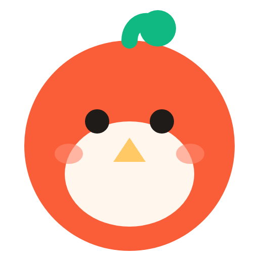
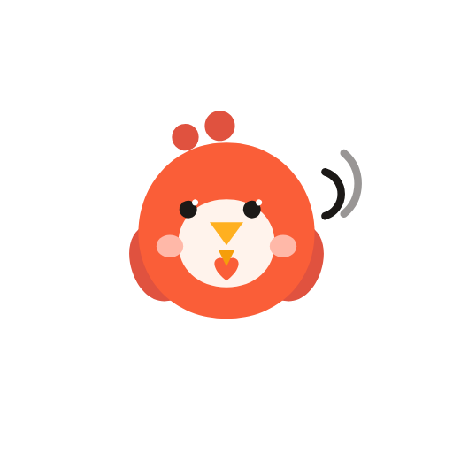
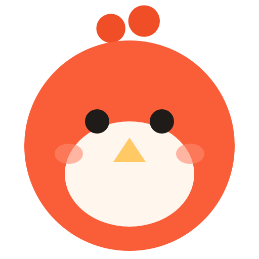
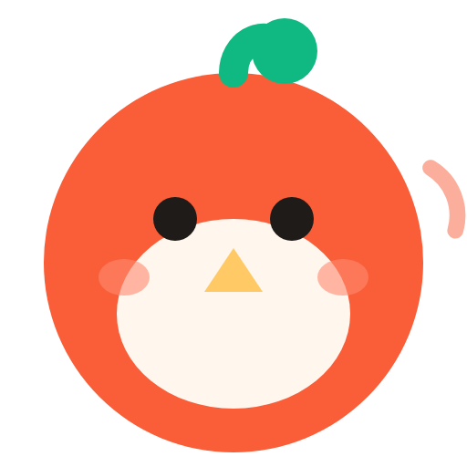

三方案并排：同画布、同底色
同一张 512 画布、同一个白色底衬，四列并排。每列下方是各自的 16px 真像素（原尺寸 + 8 倍放大）与 24dp 深/浅两种通知栏。
方案二逐字照抄 app/src/main/res/drawable/ic_launcher_foreground.xml 与 ic_notification.xml，未做任何修改。
01
四个候选
方案一 · 站点母版绿芽 · 无声波 · 直接来自线上 favicon

16px 真像素左侧为原尺寸
8× 放大
 深色通知栏 24dp浅色通知栏 24dp
深色通知栏 24dp浅色通知栏 24dp官方底色 #FAF8F5
方案二 · App 现有双呆毛 + 三道声波 · 原样未改

16px 真像素左侧为原尺寸
8× 放大
官方底色 #FFEDE6
方案三 A · 双呆毛 + 站点造型取 App 双呆毛，配色与比例取站点

16px 真像素左侧为原尺寸
8× 放大
官方底色 #FAF8F5
方案三 B · 绿芽 + 回声保留绿芽，右上加一道极淡回声弧

16px 真像素左侧为原尺寸
8× 放大
官方底色 #FAF8F5
!
为什么融合必须取舍：站点母版的绿芽（茎 + 叶）与 App 的双呆毛、声波全部落在身体的 10 点钟–2 点钟方向同一块区域。三者叠加会变成“头上长三样东西”，在 32px 以下必然糊在一起。所以方案三只能二选一：A 保呆毛弃绿芽，B 保绿芽弃呆毛、只用一道弧暗示声波。
02
三个判据
| 判据 | 方案一 站点母版 | 方案二 App 现有 | 方案三 A 双呆毛 | 方案三 B 绿芽+回声 |
|---|---|---|---|---|
| 16px 能否辨认 | 能 身体 13px、双眼各 2px、绿芽 3px，一眼是“鸟头” |
不能 图形只占画布 39%，16px 下身体仅 6px；呆毛 0.7px、声波 0.4px，全部消失 |
能 身体 13px、双眼 2px；两根呆毛会粘成一条 3×7px 的横杠（仍读作“有冠的鸟”） |
部分 身体与眼睛清楚，但回声弧退化成右缘一个 1px 淡粉噪点 |
| 24dp 单色层是否成立 | 成立 专门按 24dp 重排过：负形眼 + 负形嘴 + 嫩芽剪影 |
不成立 原样缩到 24dp 只剩一个 8px 的橙点，呆毛与声波全部丢失 |
成立 两根呆毛在 24dp 仍可辨为两个凸起 |
退化为方案一 回声弧在 24dp 必须删除，删完与方案一完全相同 |
| 与线上站点是否一眼同源 | 同源 就是线上 favicon.svg 本身（逐字节相同） |
不同源 比例 39% vs 81%；4 个色值站点没有（#E0523F / #FFF3EC / #1C1917 / #FFB020 / #F59E0B / #FFB8A8）；声波与呆毛是站点语言里不存在的造型 |
近似 身体、肚皮、眼、嘴、腮红、比例全部来自站点；只有头顶换成两根呆毛 |
同源 等于方案一 + 一个 55% 的弧，远看几乎无差别 |
| 引入站点没有的颜色 | 0 | 6 个 | 0 （呆毛用站点已有的 #F04E27） |
0 |
ⓘ
方案二如果一定要用，24dp 必须先做光学修正。下方两栏是修正后：呆毛加粗到 r1.35/1.55、声波减为一道并加粗到 1.5——能用，但这已经是重新设计，不再是“原样”。
ⓘ
方案三 B 的融合在小尺寸下等于零。16px 下那道弧是噪点，24dp 下必须删掉；也就是说它的“融合”只在高分辨率图标和 OG 图里成立，在通知栏和浏览器标签里会退回方案一。
03
结论
推荐：方案一（站点母版）作为唯一母版，方案三 A 作为唯一备选
16px 能辨认：方案一身体 13px、双眼各 2px、绿芽 3px，四个候选里唯一在 16px 仍然“一眼是布谷”的；方案二只有 6px，直接出局。
24dp 单色层成立：方案一与三 A 的剪影在 24dp 仍是“鸟头 + 眼睛 + 嘴”的完整结构；方案二原样不成立，三 B 会退化成方案一。
与站点一眼同源：方案一就是线上文件本身；三 A 只换了头顶，是唯一还能保住“同源感”的融合。
所以：主推方案一。它同时赢下三个判据，且不需要任何“因为小尺寸所以改色/改造型”的例外。
如果产品坚持保留 App 的双呆毛记忆点，唯一可落地的是方案三 A——但它有明确代价：绿芽消失（绿是站点唯一的非珊瑚色品牌资产），并且 16px 下两根呆毛会粘成一条横杠，“两根”这个信息只在 32px 以上成立。
方案三 B 建议放弃：它的融合在 16px 变成噪点、在 24dp 必须删除，两个最关键的尺寸上都没有增量。